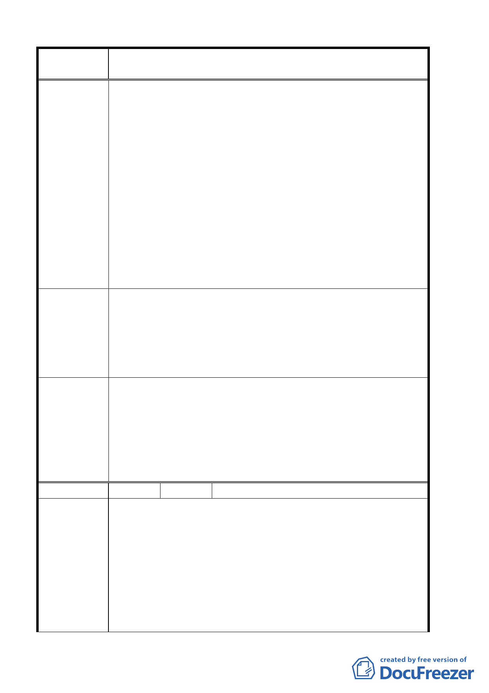

案 名 臺北市北投區都市計畫通盤檢討案（主要計畫）案
一、惟本校校門口對面之帶狀土地（使用分區係屬住宅區），其
上公私產權交錯地形挾長，不適合建築使用，建議變更為綠
地，俾能使該區域有較好的視覺空間效果，形塑景觀意象，
並提升該區居住品質。學校對面國有財產局管有公有土地振
興四小段 647、647-1、647-2、648、656、658 地號土地，
建請變更為學校用地。
建議辦法
二、本校位處山坡管制區，首揭地號土地與本校毗鄰為都市計
畫劃定之第二種住宅區，坡地高差很大，若由私人購置，
不當開發使用，將有破壞之慮。為維護山坡地安全，以免
颱風雨水沖刷侵襲造成嚴重後果，確有必要由本校統籌經
管納入整體山坡地水土保持一併規劃，以維護附近居家生
命財產安全。建議崇仰段三小段 227-1、227-2、227-9、
227-11、227-12、500、500-1 地號七筆國有土地變更為學
校用地。
一、94.5.26 專案小組第 13 次審查會議：有關北投區振興段四
專案小組審
小段 647、647-1、647-2、648、656、658 地號土地，建議
維持住宅區，並請管理單位應予管理維護。
查 結 論 二、93.10.14 專案小組第 8 次審查會議：同意崇仰段三小段
227-1、227-2、227-9、227-11、227-12、500、500-1 地號
七筆國有土地變更為學校用地。
一、原則同意該範圍土地朝開放空間方式處理，並於計畫案內
予以規範，有關都市計畫部分建議由陽明大學協調取得周
委員會議
決議
邊畸零土地後，另以個案方式辦理變更。
二、同意崇仰段三小段 227-1、227-2、227-9、227-11、227-12、
500、500-1 地號七筆國有土地並增列同地段 479、479-3、
501、400-1、（陽明大學經管國有土地）370-1、510（市有
土地）變更為學校用地。
編 號 ２４ 陳情人 譚淑文
陳情位置：北投區大屯段二小段２７０地號土地
一、人土地於五十七年購置該筆土地當時屬陽明山管理局管
轄，原為可蓋房子的建地，料陽管處裁撤而併入臺北市政
府管轄後，原可蓋房子的土地被劃入保護區禁建至今，達
陳情理由
三十七年。
二、據發展局所擬的發展策落及保護區變更為住宅區檢討原
則，毗鄰都市計畫區之保護區現有聚落得變更為住宅區。
三、土地緊鄰西園街交通便利地勢平坦坡度不超過３０度，且
旁邊為大型別墅，成現有聚落已達三十七年之久，符合發
第 17 頁，共 49 頁